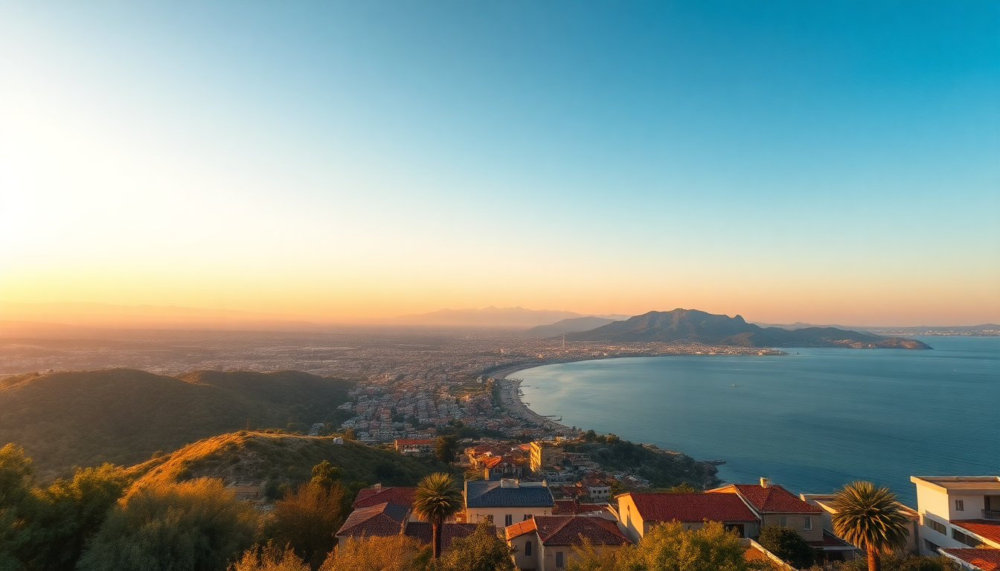

Where to Stay in Antalya: Best Neighborhoods for Every Budget

I’ve been to Antalya three times now—once on a backpacker budget, once with my parents who wanted comfort, and once solo to write this guide. Each trip taught me that picking the right neighborhood makes or breaks the trip. Kaleiçi’s cobbles charm you until you have to drag luggage over them. Lara’s all-inclusives isolate you from the city. Here’s where I’d stay again—and where I wouldn’t.
What is the best neighborhood for first-time visitors?
If you’re in Antalya for three or four days and want to see the old town, harbor, and a few museums, base yourself in Kaleiçi. It’s the historic walled quarter, and everything walkable. I stayed at White Garden Pansion on my second trip—a converted Ottoman house with a courtyard pool and a cat that adopted me for the week.
The downside: noise. Bars on Hesapçı Sokak play music until 2 AM, and the cobblestones are murder on rolling suitcases. If you want quiet, pick a guesthouse on the southern edge near Karaalioğlu Park.
- White Garden Pansion — cozy, breakfast included, central but not on the loudest strip
- Hadrianus Boutique Hotel — small pool, rooftop terrace with sea views
- Kaleiçi itself — Roman walls, Hadrian’s Gate, the marina, dozens of carpet shops (most are overpriced, haggle hard)
Where should budget travelers stay in Antalya?
Budget in Antalya doesn’t mean rough. I spent my first trip in Konyaaltı, the beachfront neighborhood west of the center. It’s less touristy than Kaleiçi, has a long pebble beach, and a tram line that gets you to the old town in 15 minutes. Hostels and budget hotels cluster along 100. Yıl Boulevard.
I slept at Sabah Pansiyon for €18 a night. Clean room, shared balcony, and the owner brought me çay every morning. The beach is a five-minute walk, and the Konyaaltı Beach Park has free showers and changing rooms. Downside: not much to do after sunset except eat at the seafood restaurants along the promenade.
- Sabah Pansiyon — basic but spotless, family-run, great value
- Tram line T1A — connects Konyaaltı to Kaleiçi and the otogar (bus station)
- Konyaaltı Beach Park — free entry, pebble beach, lifeguards in summer
- 7 Mehmet — a local favorite for pide and lahmacun, cheap and filling
Is Lara Beach worth the splurge?
Lara is where the big resort hotels sit—think massive pools, private beach strips, and all-inclusive wristbands. I spent three nights at Rixos Downtown Antalya on my parents’ trip. The breakfast buffet was absurd (50+ items), the pool was heated, and the beach had sunbeds with buttons to call waiters. It’s comfortable, but you’re cut off from the city. You’ll take a taxi (100-150 TL) to see anything beyond the hotel walls.
If you want that resort bubble—and you’re okay with not seeing “Antalya” beyond your hotel—Lara works. Families with kids love it. Solo travelers or couples should skip it unless you’re fine with resort isolation.
- Rixos Downtown Antalya — huge pools, multiple restaurants, beachfront
- Mardan Palace — over-the-top luxury, but feels like a museum, not a hotel
- Lara Beach — sandy (unlike Konyaaltı’s pebbles), but crowded in July and August
- Düden Waterfalls — 20 minutes by taxi, worth a half-day trip
What about staying near the airport or for a layover?
Antalya Airport is about 10 km east of the city center. If you’re just passing through—say, flying into Antalya and catching a bus to Kaş or Olympos—stay near the Otogar (bus station) instead. The otogar is closer to the airport than Kaleiçi is, and it’s where all the intercity buses depart.
I did this on my third trip. Stayed at Otantik Pansiyon, a 10-minute walk from the otogar. It was basic but functional: clean sheets, strong AC, and a shared kitchen. The tram (T1A) runs from the otogar to the airport in 20 minutes. No charm, but zero stress.
- Otantik Pansiyon — cheap, practical, near tram and bus station
- Tram T1A — direct to airport, runs every 15 minutes
- Otogar — buses to Kaş (3 hours), Olympos (2 hours), and Istanbul (10 hours overnight)
- Airport — small but efficient; the lounge is not worth paying for
Which neighborhood has the best food scene?
Kaleiçi has the most restaurants, but many are tourist traps—overpriced meze and soggy kebabs. For real eating, head to Muratpaşa, the residential district just north of the old town. I stumbled into Şehzade Niyazi Usta on a side street and ate the best Adana kebab of my life. Grilled over charcoal, spicy, served with grilled peppers and sumac onions—cost about 80 TL.
For seafood, Konyaaltı’s promenade has a row of fish restaurants. Balıkçı Erol does a decent grilled sea bass, but skip the “mixed meze platter” (it’s mostly filler). If you want mid-range Turkish food, 7 Mehmet (mentioned above) has branches in Konyaaltı and Muratpaşa, and they don’t overcharge tourists.
- Şehzade Niyazi Usta (Muratpaşa) — best Adana in the city, cash only
- Balıkçı Erol (Konyaaltı) — fresh fish, sit outside on the promenade
- 7 Mehmet — reliable pide and kebabs, multiple locations
- Vanilla (Kaleiçi) — decent breakfast spot, good for a lazy morning
Is public transport enough to get around?
Yes. Antalya’s tram system (T1A and T1B) covers the main areas: Kaleiçi, Konyaaltı, the otogar, and the airport. A single ride costs 6.50 TL (about 20 cents) and you pay with an Antalyakart—buy it at any tram station kiosk for 10 TL, then load credit. I used it every day.
Taxis are cheap by Western standards (a ride from Kaleiçi to Lara is about 150 TL), but drivers sometimes “forget” to use the meter. Always insist on the meter or agree on a price before getting in. For groups, Uber works in Antalya now (it’s just a taxi arranged via app, same price).
- Antalyakart — buy at tram stops, load at machines (accepts cash and card)
- Tram T1A — airport to otogar to Kaleiçi, runs 6 AM to midnight
- Taxis — flag them down on main streets, not near tourist attractions (inflated prices)
- Walking — Kaleiçi is compact, but Konyaaltı to Kaleiçi is a 40-minute walk along the coast
FAQ
Is Antalya safe for solo travelers? Yes. I’ve walked alone in Kaleiçi at midnight and felt fine. The main risks are petty scams—taxi drivers overcharging, carpet sellers inviting you for tea then pressuring a sale. Keep your wallet in a front pocket, ignore touts, and you’ll be fine. Women traveling solo should avoid dark alleys off the main streets in Kaleiçi after 11 PM, but the tourist areas are well-lit and patrolled.
What is the best time of year to visit Antalya? April-May and September-October. Summer (June-August) is brutally hot—38°C with humidity—and the beaches are packed. I visited in late April and walked around comfortably in a t-shirt, with no crowds at Hadrian’s Gate. Winter (November-February) is mild but rainy; some beachfront restaurants close until March.
Should I rent a car in Antalya? Only if you plan to explore outside the city—like Olympos, Çıralı, or the Lycian Way. Inside Antalya, a car is a liability: parking is scarce in Kaleiçi, and the tram is faster. I rented from Budget Rent a Car at the airport for a three-day road trip to Kaş. It cost €35/day with insurance. Return it before you go back to the old town.
Conclusion
- Kaleiçi for first-timers who want history and walkability—just pack earplugs and leave the hard-shell suitcase at home.
- Konyaaltı for budget travelers who want beach access and a tram to the center—skip the overpriced promenade seafood.
- Lara only if you want a resort bubble with zero city exploration—great for families, boring for everyone else.
- Muratpaşa for the best food—eat at Şehzade Niyazi Usta and thank me later.
- Near the otogar for layovers or bus connections—no charm, but you’ll catch your connection without stress.